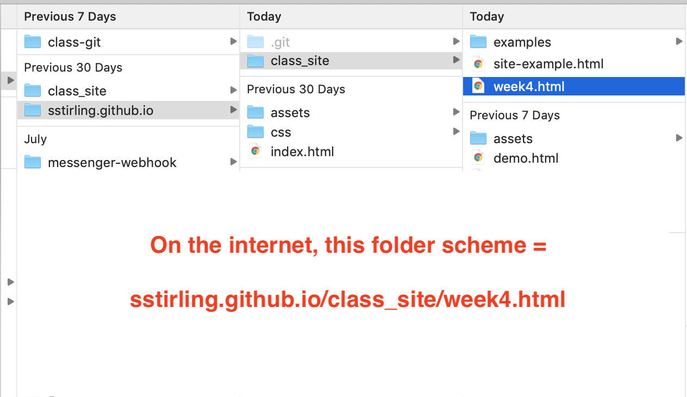
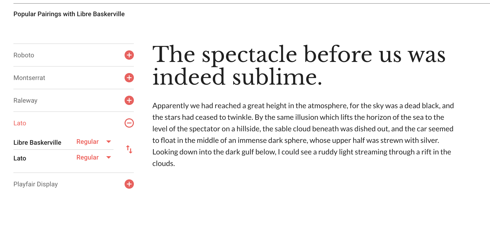
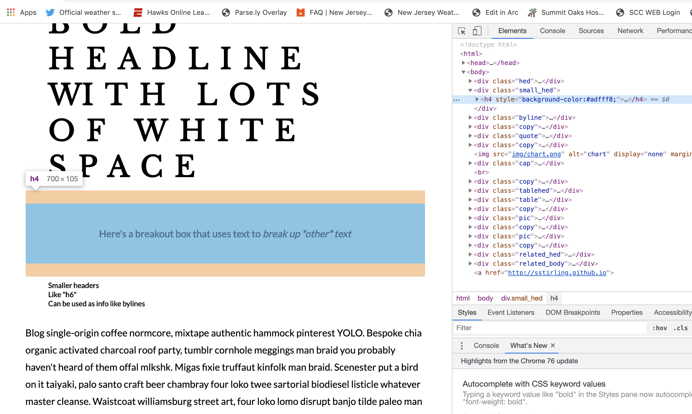

# Hello Design!
This week we're going to slow down a bit, talk about design and play around a little bit with what we've learned.
** Reminder, your first major assignment is due in two weeks. We can start to put it together tonight. **
## Design principles.
By now, y'all should've read Lena Groeger's article on design principles for journalists.
We're not going to dive too deep into design, but having some grounding in what makes for good design will make you a better journalist.
Today we're going to go through one of Lena's slidedecks where she discusses some of what you read. [You can find it here.](http://lenagroeger.com/designforj/).
If you'd like to dive in more, I'd suggest paging through Lena's site or getting your hands on a copy of the [Non-Designer's Design Book](https://www.amazon.com/Non-Designers-Design-Book-Robin-Williams/dp/0321193857/ref=dp_ob_title_bk).
## Color
Color theory is another deep well. Again, it's an area that you can delve into as deep as you like, but here are some basic resources.
* [Color Picker:](https://www.google.com/search?q=color+picker&oq=color+picker&aqs=chrome..69i57j0l4j69i65.1677j0j7&sourceid=chrome&ie=UTF-8) Basic site to get single colors and their hex codes.
* [Color Brewer:](http://colorbrewer2.org/#type=sequential&scheme=BuGn&n=3) Great for maps, color brewer will give you sequential, diverging and categorical color themes. I like it most for the first two.
* [Coolors:](https://coolors.co/) Hit the spacebar, get a new color theme! Cant be much easier than that.
* [Palleton:](https://paletton.com/#uid=1000u0kllllaFw0g0qFqFg0w0aF) Run by Adobe, this site is a little more advanced and also allows you to build a color scheme while showing you some of the theory behind it.
* [Viz Pallette:](https://projects.susielu.com/viz-palette) Another more technically advanced site for designing a color theme for your work.
## A note about the importance of folders
I know I've mentioned this before, but now that we're publishing websites, it becomes all the more important.
The folder structure you build on your computer = the site map for the website you're building.
Example:

## Fonts
You should have read up on the science of fonts. It's legit. There's a whole universe of people who's sole drive is designing the letters we read.
What I want you to do, at the very least, is play with fonts.
**[Google Fonts](fonts.google.com) is a great place to get started on this.
Let's poke around.
The beauty of Google Fonts is that it does some of the work for you. If you find a font you like, you can click on it, and it will suggest pairings:

Once you have the fonts you want to use, Google will bundle them for you and give you a single link that you can use to access them.
It will also give you the CSS code you need to add these fonts to specific elements of your page:
<img src="assets/fontcode.png">
## Play Time
We've learned a lot in the last few weeks. I want you to start using it.
### Spend the rest of the time building the foundation of a story website you could use for your first assignment.
I'll walk around and help anyone who's stuck on anything or has any questions. This is in-class lab time, so please use it.
I put together a sample site, which is actually based on the work of one of your classmates, Daisy Williams.
### This site contains several design elements that might help you.
[You can look at it here.](sstirling.github.io/class_site/examples/site-example.html)
If you'd like to see how these elements are designed, right click on the page and select "view page source".
Alternatively, if you like a specific element of the page you can right click and select "Inspect"
Then you can hover over that element, and a side panel will bring you to where it exists in the page.

## Play around. Screw up. Make ugly things. Make pretty things. Go.
## I am here, please use me.